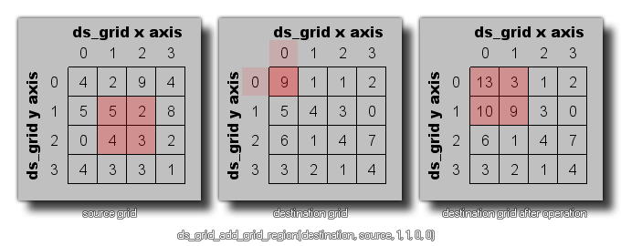

ds_grid_add_grid_region(index, source, x1, y1, x2, y2, xpos, ypos);
| 参数 | 描述 |
|---|---|
| index | 靶栅格的索引 |
| source | 源栅格的索引 |
| x1 | 从源栅格中待拷贝单元格的左端位置。 |
| y1 | 从源栅格中待拷贝单元格的顶端位置。 |
| x2 | 从源栅格中待拷贝单元格的右端位置。 |
| y2 | 从源栅格中待拷贝单元格的底端位置。 |
| xpos | 靶栅格上待叠加源栅格区域的x位置。 |
| ypos | 靶栅格上待叠加源栅格区域的y位置。 |
返回值: 无
这个函数能够被用于将从源栅格的区域内找到的所有值叠加给靶栅格，
正如下面的插图： 注意:你也能使用这个函数给同一个的栅格中将来自于被存储在一片区域的值叠
加给另一片区域（参见下方的代码举例）：
ds_grid_add_grid_region(grid, grid, 0, 0, 1, 5, 2, 0);
上述代码能够拷贝索引为变量"grid"的栅格结构中从(0,0)到(1,5)的区域中单元格的值并将其叠加给同一栅格结构中(2,0)的位置。
| Converted from CHM to HTML with chm2web Pro 2.85 (unicode) |